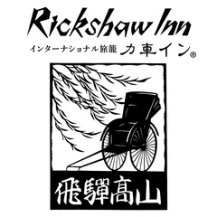
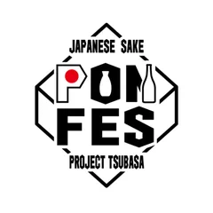

MASU PHOTO
A wooden vessel traveling the world.
A MASU in hand.
A moment you can feel.
What is MASU PHOTO
A MASU —
a wooden vessel shaped by centuries.
In a single touch,
light, air, and human presence come alive.
An old form,
reborn as contemporary art.
PHOTO BOOK SERIES
A collection of journeys,
captured across different lands.
All volumes are open to read.


PARTNERSHIP
Your story,
told through the MASU.
MASU PHOTO documents quiet moments across the world — people, places and light through the presence of a wooden vessel.
As the archive grows, so does the possibility of new expressions with cities, brands, and cultural projects that resonate with its vision.
SUPPORTED BY


Photographed By MaSU (KEI)
FOUNDER OF FOMUS